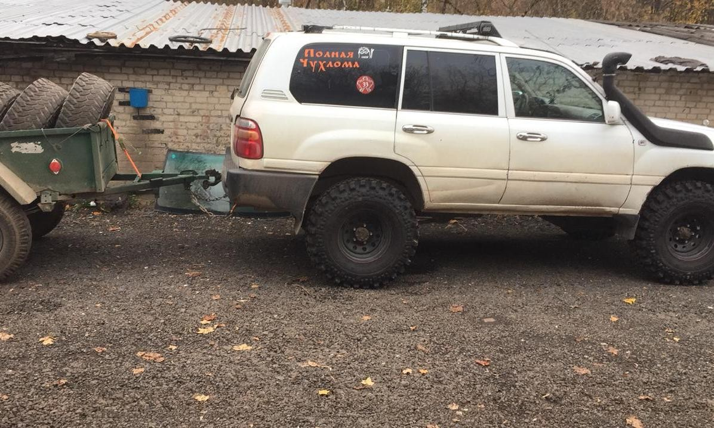
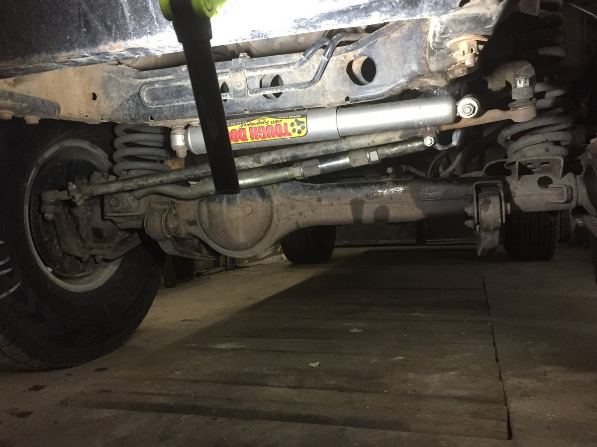
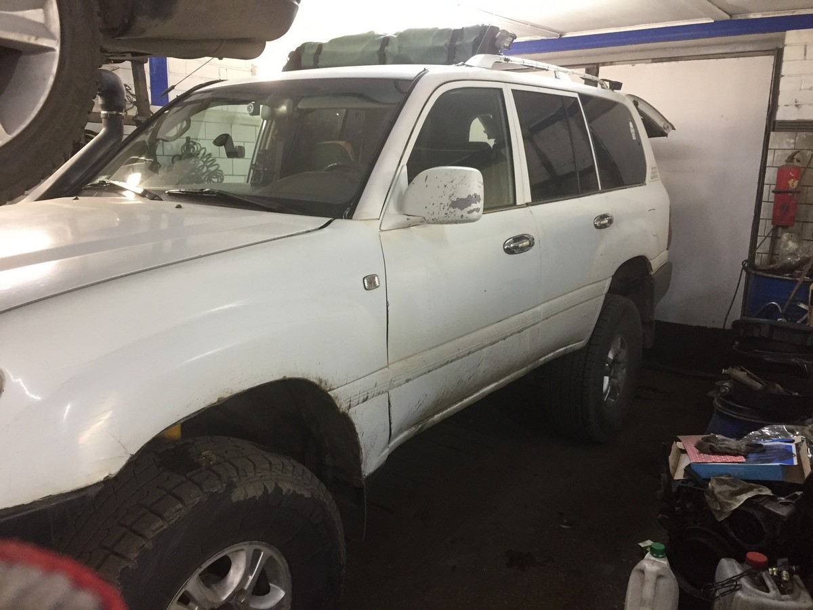
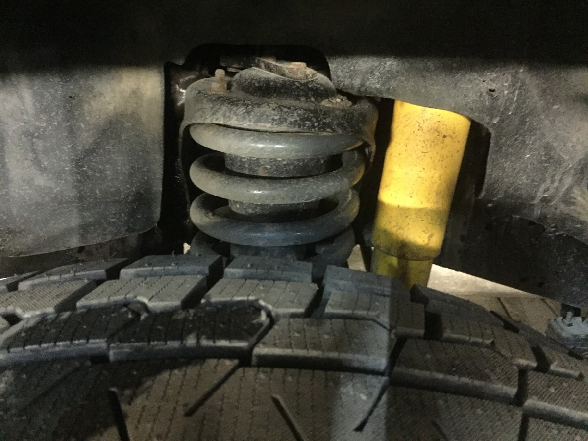
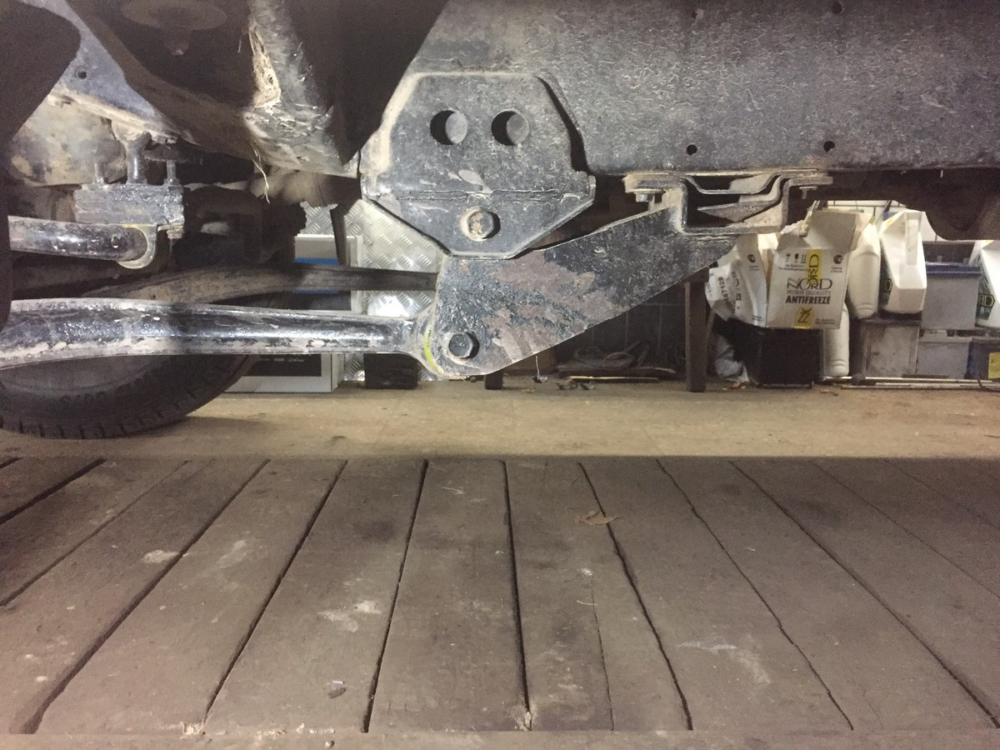

Лифт подвески: всё, что вы хотели узнать, но боялись спросить
Лифт подвески является одним из действенных способов увеличения проходимости автомобиля. Лифт возможен как на внедорожниках и полноприводных «паркетниках», так и на обычном легковом седане, универсале или хетчбеке.
Основная цель лифта – установка колёс больше штатного размера. Если на примере внедорожников, то при штатных 29`` лифт даёт возможность установки колёс от 31`` до 42`` (на автомобилях для участия в трофи-спорте). Это даёт существенное увеличение дорожного просвета и возможность проходить колеи и грязь, накатанные автомобилями со штатным дорожным просветом, без «прилипания автомобиля брюхом».
Чем больше дорожный просвет, тем выше вероятность докопаться до твёрдых слоёв, разумеется, при соответствующей резине и навыках. Вторую причину, по которой автовладельцы обращаются с пожеланием сделать лифт, можно сформулировать как «для красоты». И действительно, значительная часть сделавших лифт не пользуется им и не может сформулировать, почему им так захотелось. Вот захотелось – и всё. Поэтому не только постараюсь рассказать о технической стороне, но и в конце обязательно перечислю минусы лифта.
Для каждой модели автомобиля лифт подвески требует индивидуального подхода. Различаются способы лифта для независимой подвески и мостовых машин, таких как УАЗ, «Мерседес Гелендваген», «Тойоты» 80, 70, 105. Основное, что надо понимать владельцу, что лифт до 2`` (до 5 см), как правило, не влечёт за собой глобальных изменений в подвеске, ходовой и рулевой части. При этом установка колёс на 2`` больше при соответствующем рисунке протектора уже даёт значительное увеличение проходимости как по грязи, там и по ложбинам, оврагам и т. п., где при штатной подвеске автомобиль мог цепляться свесами. При этом при правильном лифте автомобиль остаётся вполне комфортным для езды по дорогам общего пользования и городу.
Для охотников и рыболовов, которые действительно регулярно форсируют труднопроходимое бездорожье, такой лифт – наиболее оптимальное решение для увеличения проходимости автомобиля. Конечно, в комплексе с другими мерами, такими как установка лебёдки, комплектация автомобиля хай-джеком и лифт-мейтами и др. Как показывает практика, увеличение проходимости в 90% случаев увеличивает и трудности по извлечению автомобиля из очередной грязи. Потому что автовладельцы начинают тонуть там, куда на штатных колёсах у них и в мыслях бы не было соваться. Соответственно, усложняется и выдёргивание такого застрявшего автомобиля. «Чем круче джип – тем дальше идти за трактором!» Это первое, что всегда надо помнить на бездорожье.
Увеличение клиренса более чем на 5 сантиметров – это уже намного более трудоёмкая и дорогостоящая операция, влекущая за собой существенные изменения в системах привода и управления автомобилем. Это удлинение (где-то – укорачивание) рулевых тяг, полуосей, возможно, перенос точек крепления рычагов и амортизаторов, расширение арок и другие работы. Такие машины, как правило, используются ограниченно. Например, в охотхозяйстве для обслуживания и патрулирования угодий, для внедорожного спорта. Часто такие машины люди делают «на дачу» – чтобы ездить по окрестностям за грибами, на рыбалку и на охоту. Но на дорогах общего пользования езда на большом лифте небезопасна и не очень комфортна.
Если говорить о способах увеличения дорожного просвета путём лифта подвески, то основных их три. Первый – это установка лифтовых комплектов пружин (рессор) и амортизаторов. Второй – наиболее дешёвый и потому распространённый, но и самый неправильный, который я в принципе не рекомендую делать, – проставки под штатные пружины. И третий – очень эффективный, но и очень дорогой, потому делаемый относительно редко, – установка на каждое колесо боковых редукторов.
Это возможно как самостоятельно, так и в сочетании с первым способом, имеет большое число плюсов, но, повторюсь, по цене комплекта и работ – это космос. К тому же автомобиль, лифтованный редукторами, как и автомобиль с проставками под кузов, в Москве и Московской области официально поставить на учёт невозможно. А лифт, как и увеличение размера колёс на 5 см и более, относится к переделкам, требующим внесения в ПТС. Так вот, беспроблемно с точки зрения ПДД ездить можно только на автомобиле, лифтованном заменой пружин/рессор.
На рамных автомобилях есть ещё один дешёвый и простой способ «закатить» в арки колеса увеличенного размера – это боди-лифт, или лифт кузова. Между рамой и кузовом в штатных точках крепления устанавливаются проставки, поднимающие кузов над рамой, обычно до 5 см. Такой комплект стоит 5–6 тысяч рублей (что примерно в десять раз дешевле обычного лифт-комплекта «пружины + амортизаторы»), работы также не затратны по времени и средствам. Но у боди-лифта есть свои существенные недостатки. Во-первых, зарегистрировать такую переделку официально невозможно. Во-вторых, при ударе в раму проставки, как правило, деформируются и поднятый кузов смещается. И это уже обычно не только замена боди-лифт-комплекта, но и значительные затраты на ремонт.
Почему проставки под штатные пружины или рессоры – это колхоз, который ни в одном грамотном сервисе не порекомендуют? Дело в том, что подъём кузова – это увеличение как парусности, так и опрокидывающего момента, действующего на автомобиль в повороте. Компенсировать его возможно ТОЛЬКО увеличением жёсткости самой подвески! И никак иначе. Поэтому правильный лифт – это в том числе обязательное увеличение жёсткости пружин/рессор. Пружина для лифтинга визуально может быть ниже штатной, но при этом быть в полтора раза толще и иметь больше витков. Лифт проставками возможен только в случае просевших пружин, когда владельцу не хочется тратиться на новые, но хочется вернуть автомобилю былой клиренс.
Второй момент, почему лифт проставками под пружины/рессоры не следует делать, – это увеличивает ход амортизатора на растяжение. Большая вероятность, что в верхней точке хода подвески длины штатного амортизатора не будет хватать, соответственно, при проваливании колеса будет удар с быстрым выходом из строя как сайлентблоков амортизатора, так и самого амортизатора.
Что нужно обязательно учитывать, если вы решились сделать лифт подвески и увеличить клиренс автомобиля? Снизится управляемость вследствие увеличения парусности кузова и опрокидывающего момента на автомобиль в поворотах. Необходимо помнить, что потеря управления во многих случаях происходит раньше срыва автомобиля в занос – вследствие крена и, по сути, «выпадения» водителя из-за руля.Так вот, на автомобилях с лифтом подвески такая вероятность увеличивается. Кроме этого, есть ряд технических моментов: увеличивается нагрузка на ходовую часть автомобиля. Это происходит вследствие изменения штатных углов работы ШРУСов, крестовин карданов; из-за увеличения веса колёс увеличивается нагрузка на подшипники и полуоси.
У всех перечисленных агрегатов не только снижается ресурс, но и в процессе форсированной эксплуатации (например, преодолении всё той же глубокой грязи, для чего всё и задумывалось) может быть достигнут предел конструкционной прочности. Например, на трофи-рейдах не редкость разрыв полуосей, разрушение других узлов и агрегатов. Поэтому, если вы не собираете машину для экстремального спорта (это особый разговор), главное – соблюсти принцип разумной достаточности.
Есть модели автомобилей, для которых варианты лифта и лифт-комплекты хорошо отработаны, информацию о них нетрудно найти на специализированных форумах. Но и при этом всегда есть нюансы, учесть которые может только грамотный специалист. Я работаю по этому направлению, как для спорта, так и для повседневных охотничье-рыболовных нужд, более десяти лет и готов ответить на вопросы в «ТМС-Сервисе» – контакты найти нетрудно.